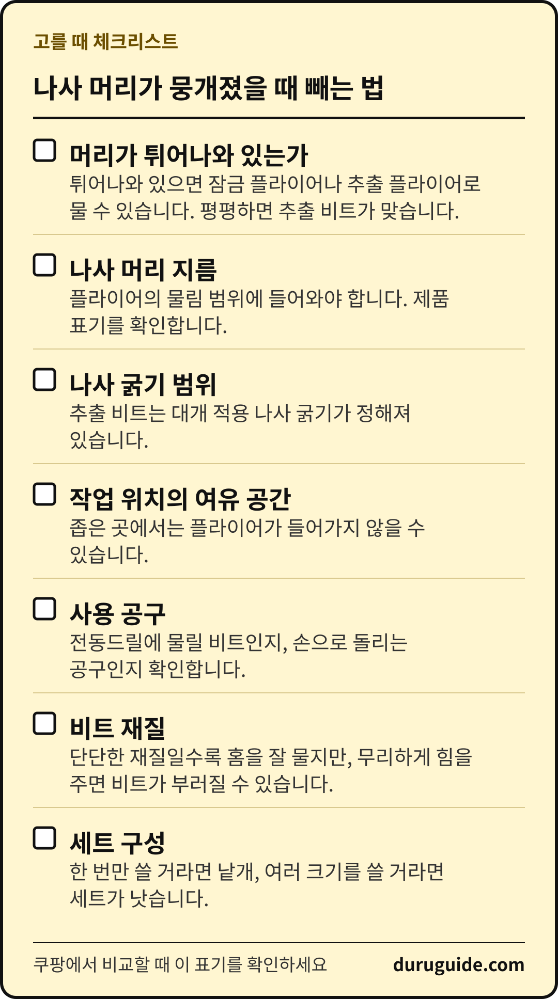

나사 머리가 뭉개졌을 때 빼는 법, 나사 추출 플라이어 고르는 기준
안 사도 되는 경우
맞는 드라이버로 누르며 돌리거나 고무줄을 끼우고, 튀어나온 머리를 펜치로 물어서 풀린다면 전용 공구는 필요 없어요.
이런 상황이죠
조립을 풀려고 드라이버를 댔는데 헛돌기만 하고, 나사 머리의 십자 홈이 둥글게 뭉개진 상황입니다. 힘을 줄수록 홈이 더 깎여서 점점 빼기 어려워집니다. 가구, 문 경첩, 전자제품 외관, 콘센트 커버처럼 한 번 조인 뒤 오래 둔 나사에서 자주 겪습니다.
왜 생기나
대부분 비트와 홈이 맞지 않거나, 누르는 힘이 모자라서 생깁니다.
- 십자 홈 크기에 비해 작은 드라이버를 썼습니다. PH1과 PH2처럼 번호가 다르면 헛돕니다.
- 드라이버가 닳았거나 끝이 둥글어진 상태였습니다.
- 처음 조일 때 전동공구로 너무 세게 조였습니다.
- 녹이나 오래된 접착제, 도료가 나사를 붙잡고 있어서 돌리는 힘이 홈에 몰렸습니다.
- 나사 재질이 무른 경우에는 홈이 쉽게 깎입니다.
헛도는 것은 대개 돌리는 힘보다 누르는 힘이 부족해서 비트가 홈 밖으로 밀려나는 현상입니다. 그래서 먼저 누르는 방법부터 바꿔 봅니다.
사기 전에 먼저 해볼 것
돈이 들지 않는 방법이 먼저입니다. 아래 순서로 시도해 보세요.
- 홈에 맞는 크기의 드라이버를 다시 고릅니다. 홈에 끼웠을 때 흔들림이 없는 것이 맞는 크기입니다.
- 드라이버를 나사 방향으로 곧게 세우고, 돌리는 힘보다 누르는 힘을 더 줍니다. 천천히 돌립니다.
- 홈과 비트 사이에 넓은 고무줄을 한 겹 끼우고 눌러 돌립니다. 고무가 틈을 메워 마찰이 늘어납니다.
- 고무줄이 없다면 얇은 비닐이나 넓은 접착 테이프 조각을 홈에 대고 눌러 보는 방법도 있습니다. 효과는 나사에 따라 다릅니다.
- 나사 머리가 튀어나와 있다면 작은 펜치나 잠금 플라이어로 머리를 직접 물고 돌립니다.
- 녹이 의심되면 윤활 스프레이를 뿌리고 몇 분 기다린 뒤 살짝 두드려 진동을 줍니다.
튀어나온 머리가 없고 완전히 평평하게 뭉개졌다면 이 방법들로는 한계가 있습니다. 이때부터 전용 공구를 고려합니다.
작업할 때는 금속 조각이 튈 수 있으니 보안경을 쓰는 편이 안전합니다. 전동공구는 낮은 속도로 시작합니다.
고를 때 체크리스트
공구는 나사 머리가 어떤 상태인지에 따라 달라집니다.
| 확인할 것 | 이유 |
|---|---|
| 머리가 튀어나와 있는가 | 튀어나와 있으면 잠금 플라이어나 추출 플라이어로 물 수 있습니다. 평평하면 추출 비트가 맞습니다. |
| 나사 머리 지름 | 플라이어의 물림 범위에 들어와야 합니다. 제품 표기를 확인합니다. |
| 나사 굵기 범위 | 추출 비트는 대개 적용 나사 굵기가 정해져 있습니다. |
| 작업 위치의 여유 공간 | 좁은 곳에서는 플라이어가 들어가지 않을 수 있습니다. |
| 사용 공구 | 전동드릴에 물릴 비트인지, 손으로 돌리는 공구인지 확인합니다. |
| 비트 재질 | 단단한 재질일수록 홈을 잘 물지만, 무리하게 힘을 주면 비트가 부러질 수 있습니다. |
| 세트 구성 | 한 번만 쓸 거라면 낱개, 여러 크기를 쓸 거라면 세트가 낫습니다. |
추출 비트는 나사 중앙에 구멍을 낸 뒤 반대 방향으로 돌려 빼는 방식이 많습니다. 구멍이 중심에서 벗어나면 잘 안 빠질 수 있어서, 중심을 정확히 잡는 것이 중요합니다.
추천 제품 찾기
위 체크리스트에서 나사 머리 상태와 굵기를 먼저 정한 뒤, 쿠팡에서 나사 추출 플라이어와 추출 비트 세트를 비교해 보세요. 적용 나사 크기 범위와 구성 품목이 내 상황에 맞는지 상세 설명에서 확인하는 것이 좋습니다. 현재 가격은 쿠팡에서 확인해 주세요.

위 표의 표기를 비교해 보세요.
현재 가격은 쿠팡에서 확인해 주세요.
이 포스팅은 쿠팡 파트너스 활동의 일환으로, 이에 따른 일정액의 수수료를 제공받습니다.